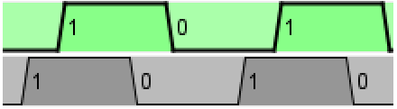

Clock
Clock
| Biblioteca: | Base |
| Introdução: | 2.0 Beta 13 |
| Aparência: |
Comportamento
O clock alternará seu valor à saída periodicamente enquanto as variações (ticks) forem habilitadas via Menu Simulação. (As variações (ticks) estarão desabilitadas por padrão.) Uma variação (tick") é a unidade de tempo do Logisim; a velocidade em que deve ocorrer poderá ser selecionada pelo submenu Frequência de Tick no menu Simulação. O ciclo do clock pode ser configurado para usar os atributos Duração em Alto e Duração em Baixo.
Observar que a simulação de clocks no Logisim's é pouco realista: em circuitos reais, vários clocks podem derivar de outros e dificilmente estão em sincronia. Mas em Logisim, todos eles experimentarão a mesma taxa de variação de tempo.
Pinos
O clock tem apenas um pino, uma saída com largura de 1 bit, cujo valor representará o estado corrente do clock. A posição desse pino será especificada pelo atributo Direção. O valor do clock irá alternar conforme programado sempre que as variações (ticks) forem habilitadas, e sempre que o componente for clicado pela ferramenta Testar.
Atributos
Quando o componente for selecionado ou estiver sendo acrescentado, as teclas com setas poderão alterar o seu atributo Direção
.
- Direção
- A face do componente onde o pino de saída deverá estar.
- Duração em Alto
- Quanto tempo em cada ciclo que a saída do clock deverá ficar em 1.
- Duração em Baixo
- Quanto tempo em cada ciclo que a saída do clock deverá ficar em 0.
- Mudança de fase
-
A mudança de fase do relógio. Abaixo estão dois relógio idênticos, um dos quais (em cinza) tem um deslocamento de fase de 1 tick.
 - Rótulo
- O texto para o rótulo associado à porta.
- Posição do Rótulo
- A posição relativa do rótulo em relação ao componente.
- Fonte do Rótulo
- A fonte com a qual o rótulo será mostrado.
Comportamento da ferramenta Testar
Ao clicar o componente clock, ele irá alternar o valor de sua saída corrente de imediato.
Comportamento da ferramenta Texto
Permite que o rótulo associado ao componente seja editado.
Voltar à Referência para bibliotecas